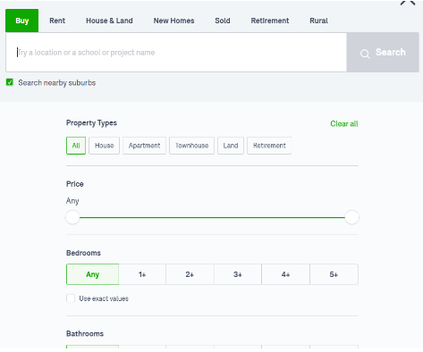
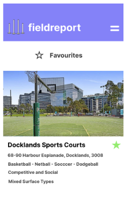

Detailed Description
Aims:
The project’s overall aim is to develop a multi-platform program or application in which people can enrich their social and active lifestyles through better knowledge of community sporting grounds around them. This unites the team’s shared interest in consumer-ready program development and the multidisciplinary nature of such a project (including front and back-end development). Furthermore as young students we can recognise the necessity for more of a balanced lifestyle and tools to help achieve this is more than motivating. The team has determined that given our vision of the program’s functionality, being inspired through layout and interactivities of property apps like Domain or realestate with its similar filter functionality (see Figure 1).

Alongside the overall aim comes the smaller goals which will act as the fundamental factors in which the overall aim can come to fruition. As such these goals will be what will be prioritised during the projects’ development.
The first goal is having a functioning list or record system. In which all the available sporting grounds are listed with their respective information list. At minimum this should provide the program some base use as a collection of the information we have deemed relevant and useful in selecting a sports ground for physical activity. As such this listing functionality will be the base for all other operations within the program.
The second goal would be implementing filtering based on the sporting ground / activity area’s factors. This would be where the user would input their desired factors in the program, in the similar notion of the aforementioned real estate filters, and suitable grounds that meet these criteria will be displayed. Having this would be fundamental to the overall aim so users can prioritise the factors that matter to them. Whilst having all the grounds listing would allow users to find an area that suits them manually, this process would be cumbersome and would not attract long-term use.
The next goal would be the implementation of a ‘favourites’ system where users could save the sporting grounds that they like and are able to see their saved listings in a separate menu which will update if grounds information changes. This is to ensure that there is a continued use for the program once the user has found relevant or suitable sporting grounds.
The fourth goal would be to implement the dynamic ratings system in which factors like equipment and sociability would be combined with user ratings to give an overall score out of 5 to sports grounds. This rating system would allow more informed choices for the end-user and as such they will be more likely to be satisfied and trusting of sport grounds on top of the objective information.
The fifth goal that the team would prioritise next would be functionality which would allow users to submit new sporting grounds to be considered or added to the platform. This is useful as it allows engagement from the users as well as helps relieve the maintenance after release for the project as new sporting grounds are made or established.
The sixth and last goal encapsulates the desire for the program to be multi-platform. This specifically would mean that a version of the program that works on the same dynamic information would be available as a website compatible with computers, and mobile devices as well as a mobile app. As mobile sister applications have become an industry staple, it is important that users are not limited by the ways in which they can interact with service, promoting a holistic approach of using the program.
Plans and Progress
Artefacts (information on location for each artefact can be found IIT-Assignment3-Tues05/README.md at main · rmit-computing-technologies/IIT-Assignment3-Tues05 (github.com)):
One of the goals of the project is having both a desktop / website platform as well as a mobile application which will share all functionalities and information. As such it was important to establish how the user interface for the mobile application may look, as the interface is what the end-user will solely interact with, a good user experience is heavily dependent on the front-end presentation and functionality. Using figma a mobile representation of the interface was created. The interface was designed to ensure it met current UI design principles such as the 10 Usability Heuristics for User Interface Design (10 Usability Heuristics for User Interface Design (nngroup.com)). Which takes into account things like easy visibility, recognisable patterns for the user, simplicity etc to name a few. Moving further into development this artefact would prove useful for the front-end developers to mimic the presentation and apply the project’s overall functionality onto.
The second artefact developed for presentation is a sample SQL database. Currently this holds one ‘grounds’ table which has the following features; groundsID, name, size, surfaceType, postcode, rating, socialStatus and sport. These were considered the key factors that the project will store for each sporting ground and as such they are part of the SQL table. Proper SQL checks and structures were taken into account in its creation, where the groundsID will auto-populate on each new record added to the database, the groundsID will act as the primary unique key for the record. The features size, surfaceType, postcode, rating and socialStatus all have conditions applied to them to only accept suitable values (for example surfaceType will only accept ‘clay’, ‘cement’, ‘grass’, or ‘other’). With further development this would have to be expanded to more tables, it is predicted tables for user information, user ratings and a user’s favourites grounds would have to be appended to the database for the full-scale implementation. 20 sample records have been added to the grounds table to emulate how records will look.
The third artefact is a basic website that utilises php functions to read a spreadsheet file, exported from the sample database table with the 20 sample sporting grounds, and display them as a list. It also features a form at the top which allows this spreadsheet to be appended and the list to be updated, emulating how an administrator of the website may easily add a new ground with a form without having to manually program it in the back-end. With further development the plaintext spreadsheet would be replaced with the SQL database solution allowing more flexibility and security in it’s implementation, especially when allowing the mobile application to access the same data as the website platform.
Roles
Chingel Suvdaa
Haidar Al Khalkhali
John Huynh
Mohamed Abdallah
Mohamed Mohamed
Terrence Taylor
Tony Villani
Scope and Limits
To define the scope of this project we will initially look at the goals listed and determine the range of our project’s implementation in regards to each goal and what the expected outcomes are to be of each respectively.
First is the sporting ground listing implementation. In the end product this would likely be performed through the use of SQL databases. A database table would hold the information for each sport ground added to the records, this would have a column for each individual factors like surface types, or ground size etc. More nuanced factors like the dynamic rating factor may have a whole new table linked to it, this will be further touched on when discussing the scope of the rating system. The website or mobile application implementation would then take each sporting ground record and present it. This will most likely be supplemented with spreadsheet data for early proof-of-concept testing; however the process should carry over, if the project team was able to host the database. Specifically in the website form, a script that will append html data to the website for each record within the database / spreadsheet would be how this would be accomplished. Looking at this goal’s scope individually this implementation would not include the described functions of users being able to put in suggestions or submit new grounds to be added to the listing. Also the program will not feature a built in map to show the location of the sporting ground, instead the address will simply be listed; with at most this address being a link to an external search on google maps or equivalent third-party tool.
The second scope examination pertains to the filtering functionality. As discussed this would be inspired by the filtering solutions found in many real estate programs. Specifically users would be presented with different options for each of the factors (clay, surface type, ground size, social aspect, location etc) in which they would be able to set what options they would like to see. For example a user may only want to be presented with sporting grounds that have a clay surface, with basketball equipment and is a social ground, in which the program will list only the grounds with these criteria. Technically this could be achieved through the programming of SQL queries which would change depending on the users input, returning the relevant database records. These records could then be parsed into html or mobile application UI data as mentioned above. This system would be limited in a notion that it will only show the listings that meet the criteria in arbitrary order, it will not make algorithmic decisions on which grounds would be best suited to the user and show those first. The ability for the user to save their specific searches with the applied filters is not something that is being considered in the scope of the project.
The third goal regarding the user being able to ‘favourite’ sporting grounds, would involve a user pressing an icon on the sporting ground listing they like and this being saved to a separate page or area listing all their favourite listings. Within the project’s scope this would likely be accomplished using a database table attached to each user in which will store the ID number for each listing they have favourited. This ID number could then be used as a lookup number in the large sporting ground database to present the information again within the favourites page. Things this implementation will not include would be having the sporting grounds that are being favourited influence how other sporting grounds are shown to the user. For example it is established that in real estate applications they most likely use the properties you ‘save’ / ‘favourite’ to further feed an algorithm to further recommend you similar properties.

The dynamic rating system would be a conjunction of different factors. Firstly users would be able to rate sporting grounds through a rating submission on each sports ground listing. Further refinement of user ratings could include ensuring that users have been in the same general geographical area as the sporting ground to rate it, to avoid incorrect ratings. However this is considered an ‘nice-to-have’ or end goal feature not included in the initial prototyping scope. These user ratings would be collected, averaged, and displayed on each listing in a similar notion to google location reviews. Moving beyond this, further refinement would include biassing the scores depending on desirable factors within the sporting grounds. For example if a sporting ground is known to always have a good selection of equipment and this is confirmed by the administration team of the program, then this could positively bias review scores. However again this could be considered an end-goal product after the initial implementation. The ratings and review system will not include things like allowing sporting ground staff members to reply to ratings or reviews.
The fifth goal involves user submitted grounds. This would be accomplished by a form a user would fill out and this information would be gathered on an administrators side. They could then use this information to verify the sporting ground exists and is otherwise suitable for the program and then manually add it using another form which will add the grounds data to the database either through spreadsheet appending scripts or scripts that will otherwise initiate SQL insertion queries into a SQL database.
The sixth goal is expanding the program to be on different platforms. Specifically it is established that a website, which will be responsive to desktop, tablet, and mobile screen sizes, as well as a mobile phone application will be the range. As this is least prioritised the previously mentioned goals and objectives will be limited to a proof-of-concept website at first, which will then be further expanded to a mobile app if the resources were available.
Tools and Technologies
The current technologies that are being used for this project are SQL, HTML CSS JS, Figma and Adobe XD.
The use of SQL in regards to databases, specifically involved using SQL Studio, a development and maintenance environment for SQL based databases. It allows SQL queries to input to create the sample tables for the listing website artefact and allows dynamic insertion into the database through javascript or php code on websites. To ensure proper user security, SQL databases would have to be used in conjunction with security techniques like password hashing or other forms of encryption rather than this information being stored in plain text form.
Figma is a web application that allows web interfaces to be designed and prototyped with transitions and screen sizes. Figma, in this case, was used to design a mockup for how the sporting ground application would look and feel on mobile devices, having the main screens designed and buttons transition between them.
Furthermore the general use of the standard HTML, CSS and Javascript workflow for website creation was utilised in the aforementioned proof-of-concept grounds listing website. In the final product this workflow would be paramount to the end product’s presentation and functionality as a website.
In terms of hardware a standard laptop or low powered desktop is enough to run and develop for all of these technologies; however, a more powerful laptop or computer with more memory is recommended for development on the full-scale project; some code may take a long time to compile. For full-scale release of this project would require some form of servers to host the user and ground information. This would most likely be achieved through the use of a third-party service such as Amazon Web Services.
Testing
The use of proof-of-concept artefacts allow our specific desired functionalities to be built individually and therefore tested individually. For example, to emulate and test storing data for the sporting grounds, a website was configured to read a spreadsheet (a substitution for a proper SQL database) and output this as different sporting ground listings. This way of quickly developing and testing individual parts allows for a more manageable testing process, whereas if testing was only done at the large compiled project at the end it could be easy to forgo testing individual features.
Timeframe
Individual member time frame (Weeks 10, 11 , 12)
| Name |
Mohamed A |
Mohamed M |
Terrence |
Chingel |
John |
Haidar |
Tony |
| Week 10 |
Complete artefact 3 – Tablet. |
Complete artefact 4 – Risk assessment. |
Complete artefact 1 – GUI. |
Create landing page – capture user details. |
Complete part of the report – plans progress, roles. |
Complete artefact 2 – Website. |
Complete part of the report – Team profile, timeframe. |
| Week 11 |
Complete artefact 3 – Tablet. |
Complete artefact 4 – Risk assessment. |
Complete artefact 1 – GUI. |
Create landing page – capture user details. |
Complete part of the report – Tools and technologies, testing. |
Complete artefact 2 – Website. |
Complete part of the report – Risks, group processes and communication. |
| Week 12 |
Complete group reflection, HTML conversion and presentation, SparkPlus, skills and jobs, Tools. |
Complete group reflection, HTML conversion and presentation, SparkPlus, skills and jobs, project description. |
Complete group reflection, HTML conversion and presentation, SparkPlus, skills and jobs. Edit project. |
Complete group reflection, HTML conversion and presentation, SparkPlus, skills and jobs. Edit project. |
Complete group reflection, HTML conversion and presentation, SparkPlus, skills and jobs. Edit project. |
Complete group reflection, HTML conversion and presentation, SparkPlus, skills and jobs. Edit project. |
Complete group reflection, HTML conversion and presentation, SparkPlus, skills and jobs. Edit project. |
Timeframe for all members for general development moving past week 12 (Weeks 8-9... Weeks 13-22)
| All members to complete these parts |
| Week 8 |
All members will read and go over the assignment details. We will have a meeting to discuss how we are going to plan out the assignment. |
| Week 9 |
We will all have a meeting to plan out how we are going to create the project idea. Roles will be delegated to members regarding the assignment specifications. |
| Week 13 |
All members will create the presentation of Assignment 3. |
| Week 14 |
Plan what further steps need to be done in order to successfully submit the application to the store. Delegate roles to each member. Create deadlines. |
| Week 15 |
Google maps API to be implemented. |
| Week 16 |
Design and build the architecture needed for the social media aspect of the application – Registering account, login, posts, messaging, add/removing friends. |
| Week 17 |
Design and build the architecture needed for the social media aspect of the application – login, posts, messaging, add/removing friends. |
| Week 18 |
Edit and perfect all artefacts. |
| Week 19 |
Edit and perfect all artefacts. Market the app. |
| Week 20 |
Demo the application and review if everything functions how it is meant to. Market the app. |
| Week 21 |
Report writing. All members will contribute to the documentation of this project in detail. This will occur during all weeks but will be examined, edited and re-written if needed during this week. |
| Week 22 |
The application will be introduced to the market. Market the app. |
Risks
The app relies on reviews from the users. During the launch of the app, exposure will be low and will have minimal downloads. We want to maximise the rate at which app store users download the app so there can be more reviews being uploaded. With more reviews, the overall app experience will be enhanced as app users are able to have a larger engagement and see more parks that they are likely to go to.
In a similar vein as the main popularity of the application would most likely come with the mobile app. It is important that proper mobile development techniques are researched and implemented correctly, as releasing a mobile application is under the scrutiny of the app store owners, notably Google or Apple. As such it is of high risk that the entire program is rejected from being released on the majority of mobile devices, limiting engagement with the program. With our mobile phone UI artefact a risk involves importing this mockup UI into an actual functioning app that still allows the same functionality as the proposed initial website.
There are always potential risks of security breaches. It is very important to our team that we would try our best to secure the privacy of each user. Unfortunately, there are many applications that do not put in the required efforts to prevent unauthorised access to personal information of users. With one of the proof-of-concept artefacts involving plain text spreadsheets to store sports ground data, if this was extended to also store user data this would be a huge security risk and would be put under a lot of public scrutiny. So it is important that for these aspects, outside of testing, that proper data structures and techniques like SQL database and hashing, are utilised. As the use of databases is industry-wide it should be relatively simple to find the resources or documentation to ensure proper and secure implementations for storing and accessing information.
As our project deals with real-life areas within the public, it is important that proper precautions and leeways are given to the owners and organisers of these sporting ground spaces. Ensuring that the program is not used as a platform for malicious activities such as theft or vandalism is paramount and the risk of negative events being enabled through information given by the project is recognised.
A risk factor unique to the AdobeXD artefact is uniformity with the mobile application of Fieldreport. Whenever multiple artefacts of the same project are implemented by different individuals/teams, uniformity of features, design and overall experience can lead to issues. As they are implemented for different environments (handheld v web browser), design can be allowed a certain level of freedom however, functionality must be maintained.
Currently they both maintain uniformity in: Landing page - Same database is used for Venues -Rating system - User & Favourites section -Search parameters are uniform between Web & Mobile Apps
Group Processes and communications
The group will communicate on MS teams. Questions that any group members want to ask are encouraged to post on MS teams. We will continuously check MS teams to see if there are any posts and we should all have our notifications turned on so that we can be alerted as soon as the member posts. We will try to reply as soon as possible so that we can further progress with the assignment and so that we are all on the same page. We will also post on MS teams to schedule meetings when every member is free. We will aim to schedule two meetings per week. Once we have decided on a time and day for the meeting, someone will then use the calendar to add the specific time so that every member won’t forget when it is. Meetings will be on a MS teams call. If a group member does not respond to communications throughout the progression of assignment 3, the tutor will be notified. If a group member doesn’t attend a meeting, we will delegate the remaining tasks to them and fill them in with what they missed.